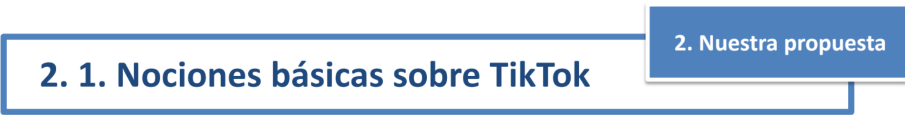
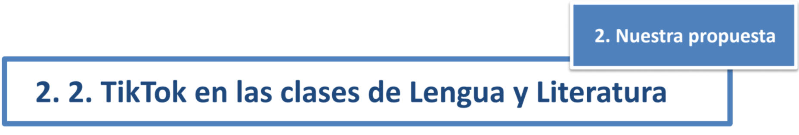
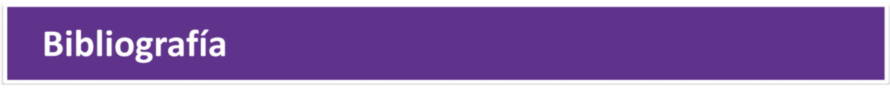
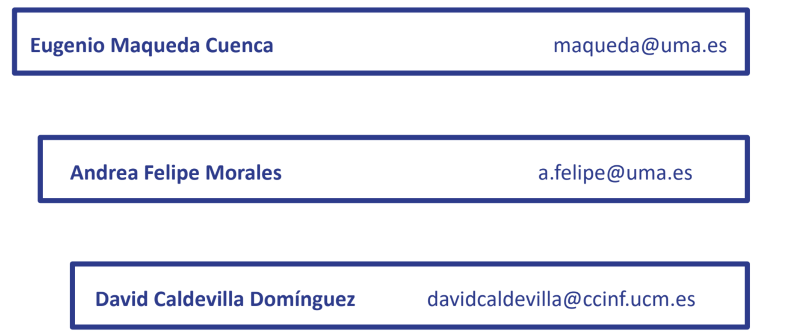

TIKTOK COMO HERRAMIENTA
INNOVADORA EN EL AULA.
APLICACIONES EN EL ÁREA DE DLL
Eugenio Maqueda Cuenca*, Andrea Felipe Morales*
y David Caldevilla Domínguez**
*Universidad de Málaga y
**Universidad Complutense de Madrid
Siguiente HOJA PERRO
- Introducción
- Nuestra propuesta
- Nociones básicas de TikTok
- TikTok en las clases de Lengua y Literatura
- Conclusiónes
Bibliografía
Siguiente HOJA PERRO
- Las nuevas tecnologías han conseguido democratizar la elaboración y
difusción de contenidos.
- Los jóvenes han dejado atrás el papel pasivo de meros receptores de
historias, para convertirse en emisores de las mismas, en
prosumidores.
- Búsqueda de admiración y reconocimiento, ansia de crear y de formar
parte de una comunidad del ciberespacio.
- La creatividad se nutre en experiencias y emociones.
- Las distintas herrmaientas tecnológicas han cambiado radicalmente ese
espacio comunicativo y las prácticas narrativas.
- Mediante las metodologías emergentes se está tratadno de superar la
brecha existente entre el profesor y el alumno en el aprendizaje
tradicional.
Siguiente HOJA PERRO
Este trabajo pretende ofrecer distintas posibilidades
para mejorar e innovar en nuestra docencia en el área
de Didáctica de la Lengua y Literatura, implementando
actividades realizadas mediante la red social TikTok.
Así, partiendo de la explicación del funcionamiento y
caraterísticas de TikTok, abordaremos aspectos del
curriculo de Lengua y Literatura que pueden ser
explicados a través de esta app de manera más
efectiva, motivadora, activa y cercana a la realidad de
los doscentes.
Siguiente HOJA PERRO

- TikTok es una aplicación móvil para los sitemas IOS y Android diseñada para
crear y compartir vídeos cortos (de 3 a 60 segundos) con el smartphone.
- Las descargas que se han realizado de la misma se cercan a los mil millones.
- Permite utilizar musica, insertar texto, grabar tambien la voz, jugar con la
velocidad de composición y los efectos de cámara y ofrece la posibilidad de
que los espectadores puedan grabar sus reacciones ante los vídeos.
- La interfaz es bastante simple y muy intuitiva, y permite búsquedas,
visualizaciones y creacion de contenidos.
- Para los niños y jóvenes, usar TikTok es una mezcla de entretenimiento,
querer ser conocidos y tener fans, realizar retos y poder comparar las
creaciones propias con las de los demás, estar en contacto con sus amigos/as
y pertencer y desenvolverse dentro de una cibercomunidad.
Siguiente HOJA PERRO

- Ejemplos de contenidos que pueden aprendrse mediante TikTok
- Funciones de lenguaje (función fática, referncial, metalinguística,
conativa y poética).
- Estudio de la narración como género literario (elaboración de unan
historia, estructura de una narración, diálogos, ritmo, voces
narrativas)
- Representa ción teatral.
- Textos publicitarios
Siguiente HOJA PERRO
Como hemos evidenciado, el uso didáctico de la tecnología de los
smartphones mediante la aplicación TikTok supone grandes beneficios para la
docencia 2.0. en el aula de Lengua y Literatura, puesto que ésta despierta la
motivación y el interés en los discentes -que viene determinda por la inequívoca
presencia de esta red social en sus espacios de ocio y entretenimiento
personal-, y abre un abánico de contenidos lúdico-discursivos y linguisticos
Siguiente HOJA PERRO

- Anyó, Ll. (2014). Los videojuegos y la comunicación audiovisual. En P. Requeijo y C. Gaona
(Coord.), Contenidos innovadores en la universidad actual (pp. 75-84). Madrid: McGraw-Hill.
- Aran-Ramspott, S., Fedele, M. y Tarragó, A. (2018). Funciones sociales de los youtubers y su influencia en
la pre adolescencia. Comunicar: Revista Científica de Comunicación, XXVI (57), 71-80.
- Del-Moral, M. E., Bellver, M. C. y Guzmán-Duque, A. P. (2019). Evaluación de la potencialidad creativa de
aplicaciones móviles creadoras de relatos digitales para Educación Primaria. Ocnos, 18(1), 7-20.
- Fernández Torres, M. J. y Chamizo, R. (2016). Nuevas formas de comunicación en el siglo XXI: Los
youtubers. En M. Linares, J. Díaz y M. E. del Valle (Eds.), Innovación universitaria: digitalización 2.0 y
excelencia en contenidos (pp. 253-269). Madrid: McGraw-Hill.
- García-Ruiz, R., Bonilla-del-Río, M., y Diego-Mantecón, J. M. (2018). Gamificación en la Escuela 2.0: una
alianza educativa entre juego y aprendizaje. Gamificación en Iberoamérica, 71-95.
- Jakobson, R. (1960). Linguistics and poetics. En T. Sebeok (Ed.), Style in language (pp. 350-377). MA: MIT
Press.
- Jenkins, H., Purushotma, R., Weigel, M., Clinton, K. y Robison, A. J. (2009). Confronting the Challenges of
Participatory Culture: Media education for the 21st century. A John D. and Catherine T. MacAr- thur
Foundation Occasional Paper on Digital Media and Learning. Chicago: MacArthur Foundation.
- Mañas, S. y Peña, V. (2014). Narrativas videojugables: ludificación del relato audiovisual. En P. Requeijo y
C. Gaona (Coord.), Contenidos innovadores en la universidad actual (pp. 443-451). Madrid: McGraw-Hill.
- Rego, S. y Romero-Rodríguez, L. M. (2016). Representación discursiva y lenguaje de los' youtubers'
españoles: Estudio de caso de los' gamers' más populares. Index. comunicación: Revista científica en el
ámbito de la Comunicación Aplicada, 6(1), 197-224.
Siguiente HOJA PERRO
